| 日付 | 2014年9月20日（土） |
|---|---|
| 山域 | 西上州 |
| メンバー | 家族（妻、長女・3歳、長男・1歳） |
| 山行形態 | 子連れ日帰り |
| アクセス | 車 |
| ルート (Map) | 登山口 (8:37) - (9:13) 椚峠 - (10:32) 小沢岳 (11:26) - (12:27) 椚峠 - (12:57) 登山口 |
今週末は飛び石連休なのだが、どうも天気予報が芳しくない。
その中でも比較的天気が良さそうな土曜日に山に行くことにする。
場所は西上州の小沢岳。西上州は岩山が多いのだが、
この山は比較的登りやすくファミリー向けの山である。
西上州の山に登るのは本当に久しぶりだ。
登山道入口に到着。標高650m。
側のわずかなスペースに車を停める。
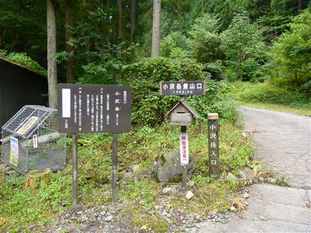
車道を歩いていく。椚峠まで車は通れなくはないが、道は悪い。
途中で車を停められそうなスペースがいくつかある。
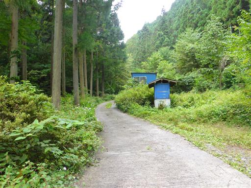
椚峠に到着。道端にはひっそりと石仏が祀られている。
車道ができる前は峠道に祀られていたのだろう。
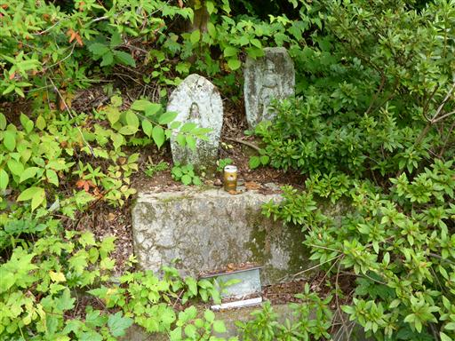
ここから登山道が始まる。車道と分かれて急斜面の道に入っていく。
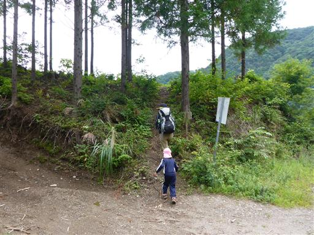
と思ったら、すぐにその道は消えて車道と合流してしまった。
気を取り直して、再度、車道から外れて登山道に入っていく。
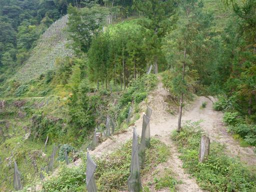
この辺りは植林された幼木が整然と並んでいる。
シカの食害を避けるためか、皆ネットに覆われている。
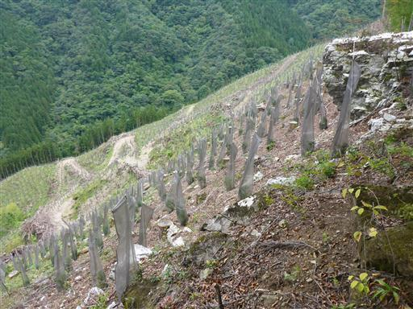
再び林道が現れる。
登山道と並行しているため、たびたび視界に入り気分をそがれる。
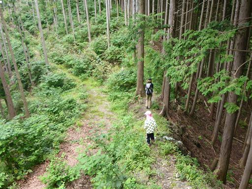
登山道に木の枝が並べられている。
一般的には道迷い防止のために置かれるものだが、他に道はなし。
先ほどの林道を歩くのが正しいルートとも思えない。
無視して進むことにする。
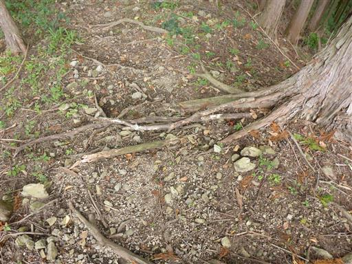
植林地帯の斜面を登って行く。
最近、娘は蜘蛛の巣が苦手で、ぐずぐず言っている。
顔にかかるのが嫌というのではなく、存在そのものが嫌なようだ。
蜘蛛の巣の発見能力は極めて高く、足元に小さな小さな蜘蛛の巣を見つけては、
大きく迂回して歩いているため、なかなか前に進まない…
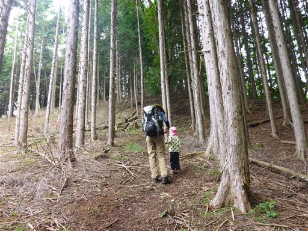
冴えない登山道を登っていくと、小沢岳山頂に到着する。標高1089m。
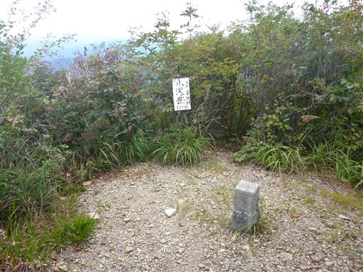
山頂には大日如来像が祀られている。
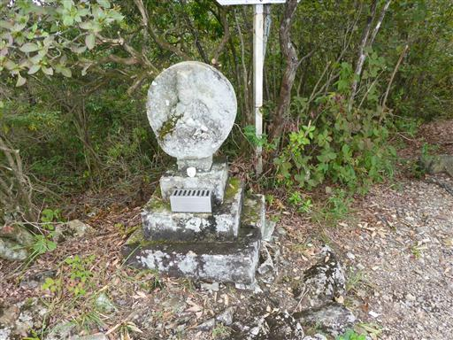
山頂からの展望は悪くない。鹿岳を始め、西上州の山々を見渡せる。
残念ながら浅間山は雲の中だ。
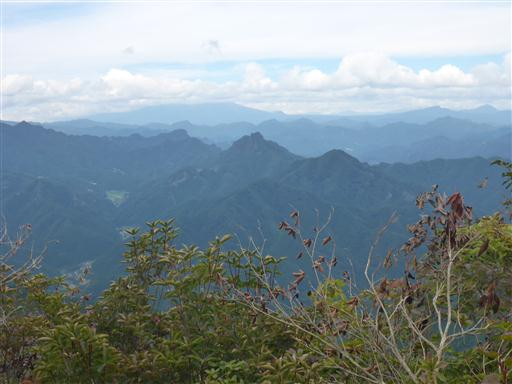
こちらは妙義山。特徴的な形なのですぐに同定できる。
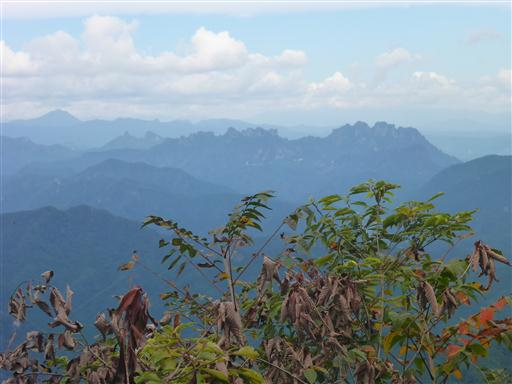
昼食をとって下山を開始する。
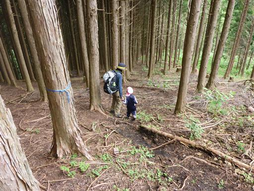
足元にクリの実が落ちている。
秋になって木の実がたくさん見られるようになった。
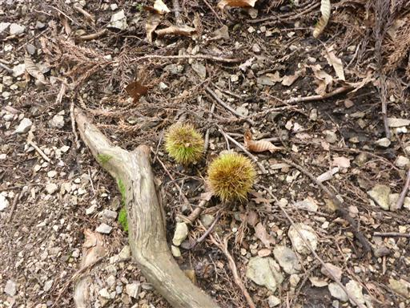
登山道と林道が接したところで、林道に乗り換える。
こちらの方がアップダウンがないので楽だ。
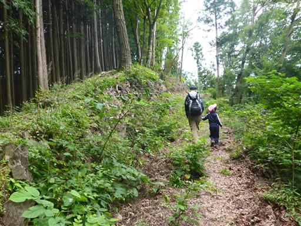
大量の豆がなっている。つぶすと赤い汁が出てきた。
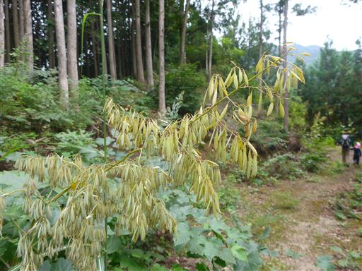
林道は途中で密藪に覆われ通行不能になる。
仕方がないので、斜面を登って登山道に復帰する。
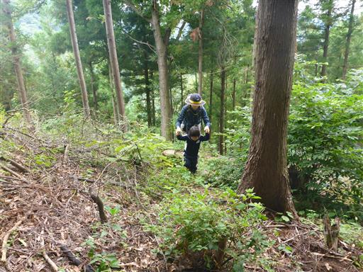
植林の幼木地帯に出てくる。
この辺りはヤマハギが群生している。
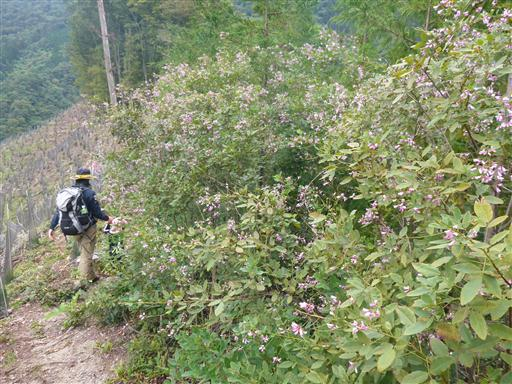
ヤマハギはマメ科の植物。
可愛らしい花ではないが、沢山咲いているため見ごたえがある。

椚峠に到着。地面にフンコロガシを見つける。
後ろ足で自分の体より大きい糞を一生懸命転がしている。
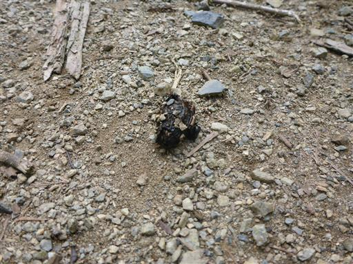
あとは美しい沢沿いの林道を下って車まで戻る。
西上州らしい渋い山だった。
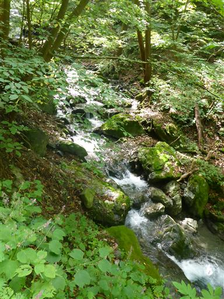